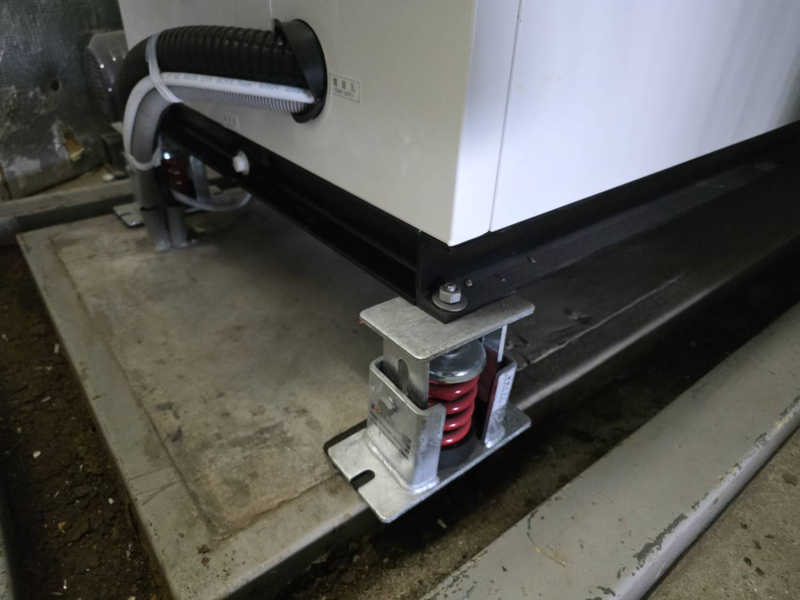

桃園・全台｜工業噪音改善工程
中央噪音工程不是把聲音蓋住，是把問題找出來。
專業處理工廠設備、空壓機、排風機、冷卻水塔、冰水主機、發電機、排氣管路與低頻振動。從聲源、風量、管路、基座到建築結構一起判斷，再規劃隔音、消音、吸音與減震工程。
20+ 年現場經驗500+ 工程案例桃園及全台服務
20+ 年工業噪音工程經驗
500+設備與工程案例
10–30 dB常見改善幅度
全台現勘、規劃與施工
主要服務


不同設備，噪音走的路也不同。
空壓機可能卡在散熱與低頻振動；排風機要看風切、風管與出口方向；冷卻水塔還有風扇、落水與結構傳振。先找對來源，再決定要隔音、消音還是減震。
空壓機噪音改善
隔音罩、散熱、進排風消音、基座減震與管路振動。
看空壓機專頁 →排風機／風機噪音
風切、出風口、管路共鳴、消音器與設備振動。
看排風機專頁 →冷卻水塔噪音
風扇、落水、馬達、隔音牆、進排風與結構振動。
看冷卻水塔專頁 →冰水主機低頻噪音
主機、避震器、管路、吊架及建築結構傳振。
看冰水主機專頁 →低頻噪音與結構傳振
嗡嗡聲不一定在設備旁最明顯，需追查真正傳遞路徑。
看低頻噪音專頁 →工廠隔音／消音工程
產線、機械、機房、隔音牆、隔音罩與局部噪音防治。
看桃園工業噪音服務 →
工程案例
查看餐飲、商場、工廠、飯店與大樓設備實際改善紀錄。
查看工程實績 →現場勘查與初步判斷
可以先傳設備照片、影片與噪音發生位置，協助抓原因方向。
聯絡我們 →近期先強化：空壓機噪音改善
空壓機最常見的錯誤，就是「做一個密閉隔音罩就好」。實務上還要同時處理散熱、進排風消音、門縫與穿孔、設備基座以及管路傳振，否則可能聲音沒完全解決，設備溫度反而先上去。
工程判斷
看到機器很吵，不代表只處理機器就好。
我們會把聲源、傳遞路徑與受音位置一起看。設備本體、進排風、風管、管線、基座、吊架、牆面與樓板，都可能讓聲音繞路跑到你原本沒想到的位置。
先確認真正噪音源
兼顧風量與設備散熱
檢查低頻與結構傳振
依現場條件客製設計
為什麼工程要整體看
降噪不是把板子加厚就結束。
隔音阻隔空氣傳聲，同時要注意門、縫隙、風口與穿孔。
消音處理風管、進排風與氣流噪音，還要兼顧風量和壓損。
吸音降低箱體或空間內反射與混響，不能拿吸音材料當隔音板使用。
減震設備腳座、彈簧、防震墊、吊架與管線都可能形成傳振短路。
低頻低頻波長長、穿透與繞射明顯，總分貝不高也可能非常擾人。
現場驗證施工前後要依設備運轉與受音位置比對，確認問題是否真正下降。
常見問題
客戶最常先問的幾件事
空壓機很吵，直接做隔音罩可以嗎？
可以是其中一個方法，但不能只看隔音。空壓機還要考慮散熱、進排風、維修、基座振動與管路傳振，否則容易出現「聲音少一點，設備溫度高很多」的問題。
工廠噪音改善可以做到完全無聲嗎？
不建議承諾完全無聲。可達成的改善幅度與設備、頻率、距離、背景噪音、建築結構及施工條件有關，應先釐清來源與目標。
只墊橡膠就可以解決低頻振動嗎？
不一定。隔振材料需依設備重量、轉速、激振頻率與安裝方式選擇。若剛性不合、受力不均或已壓實，效果可能非常有限。
可以先傳照片和影片評估嗎？
可以。建議提供設備全景、運轉影片、出風口、管路、基座或吊架照片，以及最明顯聽到噪音的位置與時段。
服務地區只有桃園嗎？
不是。桃園是重點服務區域之一，同時承接全台工業設備噪音改善案件；實際現勘與施工依案件條件安排。